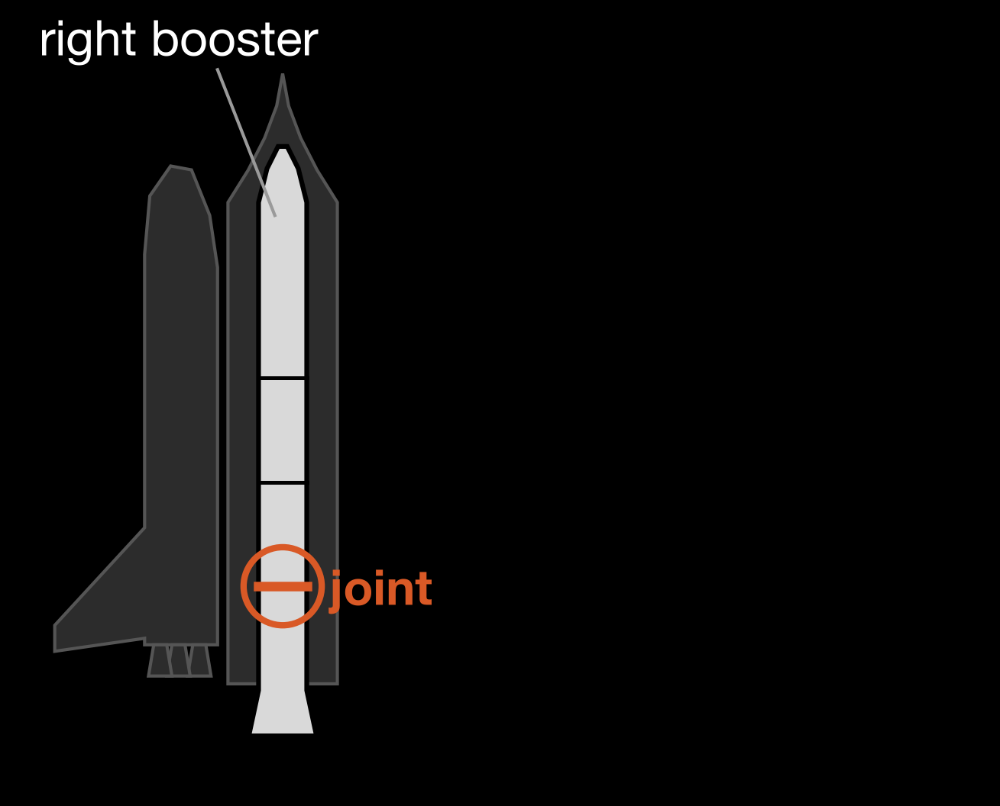
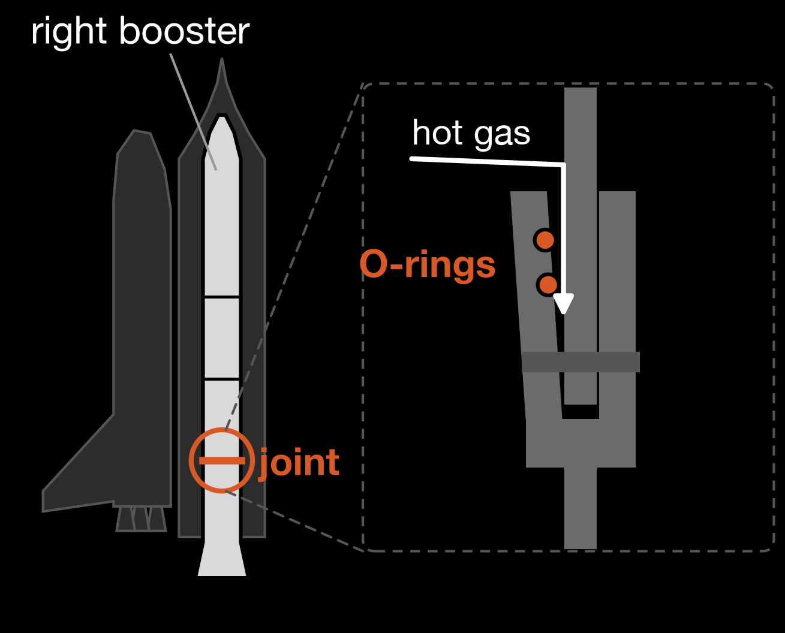
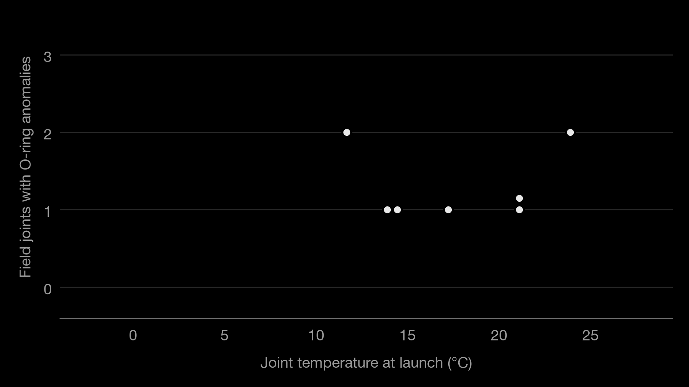
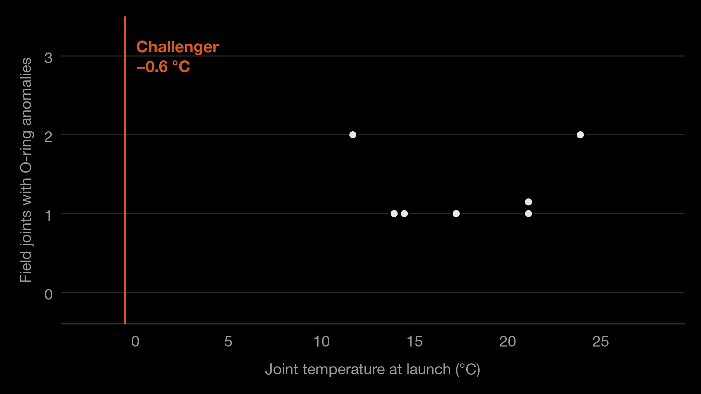
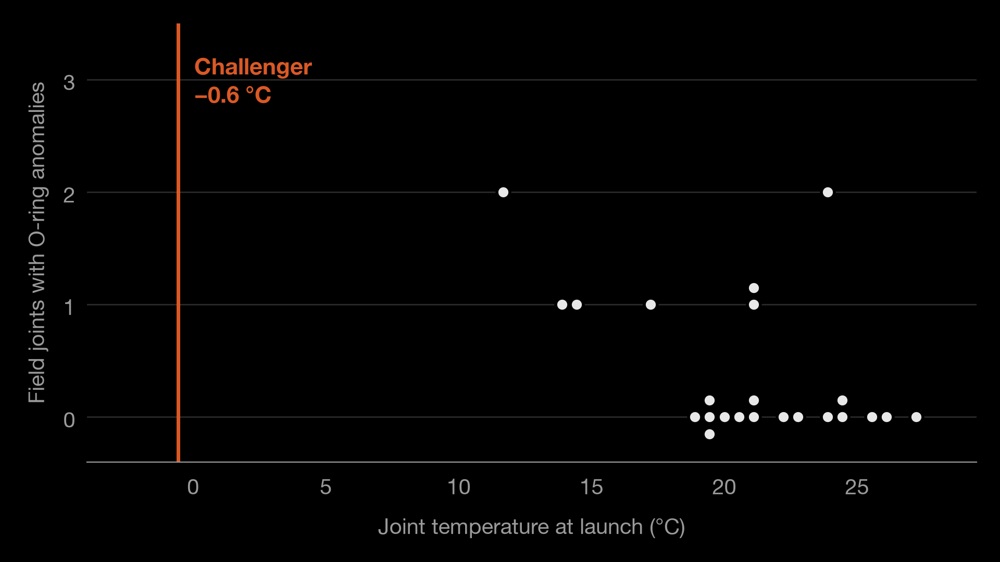

73 seconds.
$1.7 billion.
7 lives.
This was avoidable.





“For a successful technology, reality must take precedence over public relations, for nature cannot be fooled.”
73 seconds.
8 years.
Primary
Secondary
Photos
Charts and diagrams